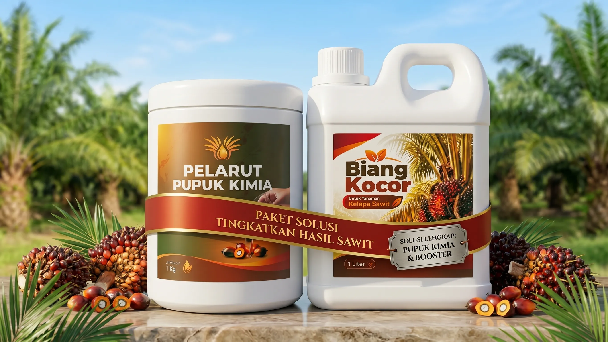
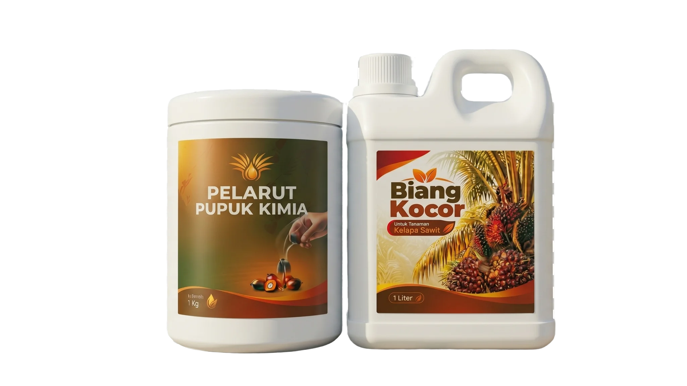

Sinergi dahsyat Pelarut Pupuk Kimia (1 Kg) & Biang Kocor Sawit (1 Liter). Melarutkan residu pupuk yang mengendap, melipatgandakan serapan akar, dan melebatkan tandan buah segar (TBS).
Hanya
Rp 395rb
2 Hektar
Sistem
Bayar COD
Aman 100%
Aplikasi
Drum 200L
1 Botol/Pohon

Cukup untuk 2 Hektar (±260 – 280 Pokok Sawit)
Mayoritas pekebun sawit bekerja keras setiap hari namun hasilnya tidak sebanding dengan modal yang dikeluarkan karena kesalahan metode nutrisi:
Harga NPK, Urea, TSP, dan KCL terus meroket. Biaya pupuk menyedot hingga 60% lebih modal kerja pekebun swadaya setiap musimnya.
Pupuk tabur mudah menguap oleh panas terik, hanyut saat hujan deras, atau terikat kuat oleh tanah masam (fiksasi Al & Fe) sehingga tidak terserap akar.
Pohon sawit mogok berbuah berbulan-bulan. Tandan buah menyusut kecil, timbangan tonase di PKS anjlok drastis dan pendapatan keluarga merosot.
Residu kimia bertahun-tahun mengeraskan tanah piringan, merusak mikroba baik dan membuat bulu-bulu akar sawit mati lemas kekurangan oksigen.
Jangan buang uang jutaan rupiah untuk pupuk yang tidak terserap. Saatnya beralih ke teknologi kocor efisiensi tinggi.
Kedua produk ini diformulasikan secara khusus untuk bekerja saling melengkapi dalam sistem kocor piringan kelapa sawit:
Bentuk: Bubuk / Kristal Mikro Pasta Putih Halus (100% Water Soluble)
Berfungsi sebagai pemutus fiksasi senyawa kimia pada tanah masam. Mengurai zat hara makro (N, P, K, Mg, Ca, S) menjadi ion mikro aktif yang langsung diserap seketika oleh bulu-bulu perakaran sawit tanpa ada yang terbuang.
Bentuk: Cairan Konsentrat Pekat Cokelat Gelap (Formula Khusus Kelapa Sawit)
Booster nutrisi cair dengan ZPT dan multivitamin tanaman yang memicu rasio hormon pembungaan betina. Mempercepat pengisian buah, memperbesar janjang TBS, menaikkan rendemen minyak sawit, dan menjaga stamina pohon di musim trek.
Cukup dengan Rp 395.000,- sudah mencukupi kebutuhan pemupukan kocor untuk 2 Hektar Lahan Sawit (±260 – 280 Pokok).

Geser slider di bawah ini sesuai luas lahan kebun sawit yang Anda kelola untuk melihat estimasi penghematan biaya pupuk kimia:
*Asumsi rata-rata Rp 3.5jt/Ha untuk pupuk NPK & makro konvensional per putaran.
Biaya Paket: Rp 395.000
(1 Paket = 2 Hektar / ±280 Pohon)
Uang tunai modal yang terselamatkan dan bisa dialokasikan untuk kebutuhan lain!
Pekerja kebun tidak perlu menimbang rumit di lapangan. Cukup ikuti 3 langkah standar resmi berikut:
Siapkan drum berisi air bersih 200 Liter. Masukkan 1 Liter Biang Kocor dan 1 Kg Pelarut Pupuk Kimia. Aduk rata hingga seluruh cairan dan pasta bubuk larut sempurna tanpa ada endapan.
*1 Drum mencukupi untuk 1 Ha (±133 Pohon)
Gunakan botol bekas air mineral besar ukuran 1,5 Liter sebagai wadah takar kerja. Masukkan larutan dari drum ke dalam botol.
Dosis: 1 Botol (1,5 Liter) untuk 1 Pokok Sawit.
Siramkan 1 botol larutan secara melingkar merata ke tanah piringan pohon sawit pada zona perakaran tempat biasa menabur pupuk. Nutrisi akan seketika meresap langsung ke jaringan akar aktif.
*Serapan 3x lebih cepat dibanding pupuk taburPerubahan positif akan terlihat bertahap secara alami sesuai siklus fisiologis pohon sawit:
Pelepah sawit mulai membuka lebih lentur dan tidak kaku. Daun sawit yang tadinya kuning kusam berubah menjadi hijau tua segar berkilau karena klorofil dan serapan hara aktif kembali.
Putaran bakal bunga betina mulai aktif bermunculan di sela-sela pelepah. Bunga jantan berlebih dan bunga dompet yang membusuk ditekan secara drastis, mengakhiri periode buah trek.
Tandan Buah Segar (TBS) membengkak padat, berondolan bernas dan kaya minyak. Saat ditimbang di RAM atau PKS (Pabrik Kelapa Sawit), tonase timbangan naik nyata dan pendapatan melonjak!
Isi formulir di bawah ini. Pesanan Anda akan kami kirimkan ke alamat kebun/rumah dan Anda baru membayar kepada kurir saat barang sudah sampai di tangan Anda!
Rp 395.000
Pelajari lebih lanjut mengenai dosis, keamanan produk, dan tata cara pemesanan:
Pak Haji Syamsul (Riau)
Memesan 2 Paket Kombo